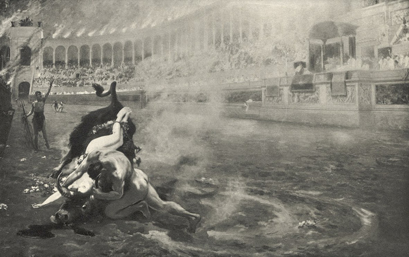
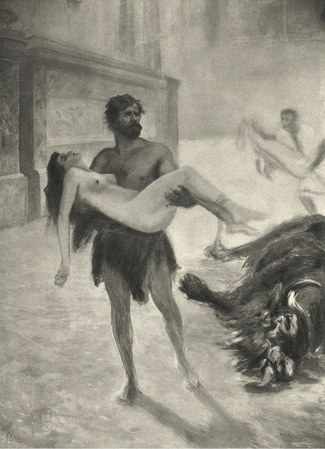

LXVI
Za dob Neronových vešla v obyčej večerní představení, dříve zřídka kdy a výjimečně pořádaná, a to jak v cirku, tak i v amfitheatrech. Augustiani měli je rádi, poněvadž po nich často následovaly hostiny a pitky, trvající až do rána. Jakkoliv lid byl již přesycen proléváním krve, přece jen, když se rozšířila pověst, že se blíží konec her a že poslední křesťané mají zemříti při večerní podívané, nespočetné davy táhly do amfitheatru. Augustiani se dostavili do posledního muže, neboť tušili, že to nebude obyčejné představení a že si Caesar umínil dát si předvésti tragédii bolesti Vinitiovy. Tigellinus uchoval tajemství, jaký druh mučení určen byl nevěstě mladého tribuna, ale to jen dráždilo všeobecnou zvědavost. Ti, kdož vídali kdysi Lygii u Plautiů, vypravovali nyní divy o její kráse. Jiné zajímala především otázka, spatří-li ji opravdu dnes v aréně, protože mnozí z těch, kteří slyšeli odpověď, jakou dal Caesar Petroniovi u Nervy, vysvětlovali si ji dvojím způsobem. Někteří se přímo domnívali, že Nero vydá nebo snad již vydal dívku Vinitiovi; připomínali si, že byla zástavou, a že tudíž směla uctívati taková božstva, jaká se jí zalíbila, a že právo národů nedovolovalo, aby byla trestána.
Nejistota, očekávání a zvědavost zmocnily se všech diváků. Caesar zavítal dříve nežli jindy a spolu s jeho příchodem začali si lidé zase šeptati, že jistě dojde k něčemu mimořádnému, protože Nerona provázel kromě Tigellina a Vatinia ještě Cassius, centurio obrovské postavy a obrovské síly, kterého si Caesar brával s sebou jen tehdy, když chtěl míti po boku ochránce, na příklad, když mu přicházela chuť na noční výpravy na Suburu, kde si pořádal zábavu, zvanou „sagatio“, záležející v tom, že dívky, s nimiž se potkali cestou, byly vyhazovány do výše na vojenském plášti. Také bylo si povšimnuto toho, že v samém amfitheatru byla provedena jakási opatrnostní opatření. Stráže praetoriánské byly zesíleny, velení nad nimi pak měl nikoli centurio, nýbrž tribun Subrius Flavius, známý dosud slepou oddaností k Neronovi. Tehdy bylo pochopeno, že Caesar si přeje zabezpečiti se pro všechny případy proti výbuchu zoufalství Vinitiova, a zvědavost vzrostla ještě více.
Všecky pohledy obracely se s napjatým zájmem na místo, na němž seděl nešťastný snoubenec. Ten pak velice bled, s čelem pokrytým krůpějemi potu byl v nejistotách jako ostatní diváci, ale rozechvěn do posledních hlubin duše. Petronius, nevěda dobře sám, k čemu dojde, neřekl mu ničeho, jen se ho ptal, vrátiv se od Nervy, je-li na všecko připraven, a potom, přijde-li na podívanou. Vinitius odpověděl na obě otázky: „Ano!“ – ale přitom proběhla mu celým tělem hrůza, jelikož tušil, že se Petronius neptá bez příčiny. On sám žil již od nějaké doby jen jakýmsi položivotem, sám se hroužil ve smrt a smířil se se smrtí Lygiinou, protože měla jim býti oběma vykoupením a přitom i sňatkem, ale nyní poznal, že něco jiného jest mysliti na poslední chvíli zdaleka jako na klidné usnutí, kdežto něco jiného zase jíti se dívat na muka bytosti, dražší nad život. Všecky bolesti, dříve již přetrpěné, ozvaly se v něm nanovo. Ztišené zoufalství začalo opět v duši křičeti; zachvátila jej dávná touha, aby Lygii zachránil stůj co stůj. Od rána se chtěl dostati do cuniculů, aby se přesvědčil, je-li v nich Lygie, ale praetoriánské stráže hlídaly všecky vchody, a rozkazy byly tak přísné, že ani známí vojáci se nenechali obměkčiti prosbou ani zlatem. Vinitiovi se zdálo, že nejistota jej usmrtí dříve, nežli spatří děj v aréně. Kdesi na dně srdce zmítala sebou ještě naděje, že Lygie snad není v amfitheatru a že všecky obavy jsou plané. Chvílemi se chytal této naděje všemi silami. Říkal si, že Kristus mohl ji přece odvésti z vězení, ale že nemůže dovoliti, aby trpěla muka v cirku. Dávno již se smířil ve všem s Jeho vůlí a nyní, když byl zahnán ode dveří cuniculů, vrátil se na své místo v amfitheatru, a když z rozdychtěných pohledů, jaké byly na něho upírány, poznal, že nejstrašlivější domněnky mohou býti oprávněny, začal Ho prositi v duši s horoucností, podobající se hrozbě, aby ji zachránil. „Ty můžeš!“ opakoval, křečovitě svíraje ruce. „Ty můžeš!“ Předtím ani netušil, že ten okamžik, až se změní ve skutečnost, bude tak strašlivý. Teď nejsa si ani vědom, co se s ním děje, měl přece jen dojem, že spatří-li mučení Lygiino, jeho láska se změní v nenávist, jeho víra v zoufalství. A současně byl polekán oním dojmem, poněvadž se bál uraziti Krista, kterého snažně prosil o smilování a zázrak. Neprosil již o její život, chtěl jen, aby zemřela dříve, nežli bude vyvedena do arény, a opakoval si v závratné hlubině bolesti v duši: „Aspoň toho mi neodřekni a já k Tobě zahořím láskou ještě větší, nežli jakou jsem Tě miloval dosud!“ Nakonec jeho myšlenky se rozbouřily jako vlny, vzedmuté vichřicí. Probouzela se v něm touha po pomstě a krvi. Zachvacovala jej šílená vášeň vrhnouti se na Nerona a zardousiti jej přede všemi diváky, ale zároveň cítil, že tou vášní opět uráží Krista a přestupuje Jeho přikázání. Chvílemi mu prolétly hlavou záblesky naděje, že to vše, před čím se třásla jeho duše, odvrátí ještě všemocná a milosrdná ruka, ale okamžitě hasly jako v neskonalém rozlítostnění, že Ten, jenž mohl jediným slovem rozbořiti tento cirk a zachrániti Lygii, přece ji opustil, ačkoli Mu důvěřovala a milovala Jej všemi silami svého čistého srdce. A myslil dále na to, že to ona tam leží ve tmavém cuniculu, slabá, bezbranná, opuštěná, vydaná na milost i nemilost zhovadilých strážců, pracující snad v posledním tažení, kdežto on musí bezradně čekati v tomto strašlivém amfitheatru, nevěda, jaká muka byla pro ni vymyšlena a co spatří za chvíli. Konečně jako člověk, jenž padaje do propasti, zachycuje se o všecko, co roste na jejím pokraji, chytil se oběma rukama myšlenky, že věrou může ji přece jen zachrániti. Vždyť zbýval jen tento jediný prostředek! Vždyť Petr řekl, že věrou možno pohnouti zemí v základech!
A proto sebral všecky duševní síly, potlačil v sobě pochybnosti, všecku svoji bytost uzavřel do jediného slova: Věřím – a čekal na zázrak.
Ale jako příliš napjatá struna musí prasknouti, zlomilo i jej přílišné napětí. Mrtvolná bledost pokryla mu tvář a tělo začalo tuhnouti. Tehdy jej napadlo, že jeho prosba byla vyslyšena, poněvadž, hle, umírá! Zdálo se mu, že také Lygie zcela určitě zemřela a že Kristus je tímto způsobem přijímá k sobě. Aréna, bílé tógy nepřehledných diváků, světlo tisícerých lamp a pochodní – všecko mu pojednou zmizelo z očí.
Ale ta slabost netrvala dlouho. Za chvíli se probudil či vlastně probudilo jej dupání netrpělivého lidu.
„Jsi nemocen,“ řekl mu Petronius, „dej se zanésti domů!“
A nedbaje toho, co tomu řekne Caesar, vstal, aby podpíral Vinitia a odešel spolu s ním. Srdce mu překypovalo soucitem, ale přitom nesnesitelně jej dráždilo, že Caesar se díval skrze smaragd na Vinitia, se zálibou studuje jeho bolest, snad proto, aby ji pak vylíčil v pathetických slokách a došel potlesku posluchačů.
Vinitius zavrtěl hlavou. Mohl zemříti v tomto amfitheatru, ale nemohl z něho odejíti. Vždyť se mělo představení započít každou minutu.
Vskutku, téměř v téže chvíli praefekt města hodil před sebe červený šátek a na toto znamení zaskřípěly závory proti císařskému pódiu a ze tmavého jícnu vyšel do jasně osvětlené arény Ursus.
Obr pomžikával, patrně oslněn září arény, pak postoupil do jejího středu, rozhlížeje se kolem, jako by chtěl rozeznati, s čím bude se musiti srazit. Všem Augustianům i většině diváků bylo známo, že je to člověk, jenž zardousil Krotona, a proto při pohledu na něho ozval se šum po všech lavicích. V Římě nechyběli gladiátoři, kteří byli daleko obrovštější nad obvyklou lidskou míru, ale takového ještě neviděly oči Quiritů. Cassius, stojící na pódiu za Caesarem, vypadal proti tomuto Lygovi jako nepatrný človíček. Senátoři, vestálky, Caesar, Augustiani i lid hleděli se zápalem znalců a milovníků na jeho mohutná, jako pařezy silná stehna, na prsa, podobající se dvěma spojeným štítům, i na herkulovské ruce. Šum se vzmáhal každým okamžikem. Pro tyto davy nemohlo býti větší rozkoše nežli viděti takové svaly při zápase, při napínání a v boji. Šum se měnil ve výkřiky a horečné otázky, kde sídlí kmen, jenž vydává takové velikány; ten pak stál uprostřed amfitheatru nahý, podobaje se spíše kamennému kolosu nežli člověku, se soustředěnou, ale přitom smutnou tváří barbara, a vida prázdné jeviště, rozhlížel se udiveně svýma modrýma očima dítěte brzy po divácích, brzy po Caesarovi, brzy po mřížích cuniculů, odkud očekával katy.
Ve chvíli, kdy vcházel do arény, jeho prosté srdce naposledy se rozvířilo nadějí, že snad na něho čeká kříž, ale když neuzřel ani kříže, ani připravené jámy, napadlo jej, že není hoden té milosti a že bude musit zemříti jinak, dle všeho v zápase s šelmami. Byl bezbranný i rozhodl se, že zahyne, jak se slušelo vyznavači „Beránka“, klidně a trpělivě. Zatím se ještě chtěl pomodliti ke Spasiteli; poklekl tedy v aréně, sepjal ruce a zvedl zrak ke hvězdám, míhajícím se skrze hořejší otvor v cirku.
Ta posice se davům nelíbila. Měly již dosti oněch křesťanů, umírajících jako ovce. Chápalo se, že nechce-li se obr brániti, bude po divadle. Tu a tam se ozval sykot. Někteří začali volati po mastigoforech, jejichž úkolem bylo mrskati zápasníky, kteří nechtěli bojovati. Nicméně za chvíli všecko ztichlo, poněvadž nikdo nevěděl, co čeká na obra a nebude-li chtít zápasiti, až se střetne se smrtí tváří v tvář.
A vskutku, nečekalo se již dlouho. Pojednou se ozval pronikavý hlahol mosazných trub a na toto znamení otevřely se mříže proti císařskému pódiu a do arény se vřítil za řevu bestiariů příšerný germánský tur, nesoucí na hlavě nahé ženské tělo.
„Lygie! Lygie!“ vzkřikl Vinitius.
Pak se chytil rukama za vlasy u skrání, svinul se do klubka jako člověk, jenž v sobě ucítil hrot kopí, a sípavým, nelidským hlasem začal opakovati:
„Věřím! Věřím…! Kriste! Zázrak!!“
A ani necítil, jak v tom okamžiku Petronius mu zahalil tvář tógou. Zdálo se mu, že smrt či bolest opřádá mu oči. Nedíval se, neviděl. Zmocnil se ho pocit jakési děsné prázdnoty. V hlavě mu nezůstala jediná myšlenka, jen ústa opakovala jako v pomatenosti:
„Věřím! Věřím! Věřím…!“
Vtom amfitheatr ztichl. Augustiani se zvedli z míst do jednoho, jelikož se v aréně stalo cosi neobyčejného. Ten pokorný a na smrt připravený Lyg, spatřiv svoji královnu na rozích divoké šelmy, trhl sebou, jako by jej ožehli živým ohněm, a sehnuv hřbet, začal oklikou běžeti k rozzuřenému zvířeti.
Ze všech prsou vydral se krátký výkřik úžasu, po němž nastoupilo hluboké ticho. Lyg zatím dorazil k rozběsněnému býkovi a popadl jej za rohy.
„Pohleď!“ zvolal Petronius, strhuje tógu z hlavy Vinitiovy.
Ten se zvedl, naklonil nazad svoji tvář, bílou jako stěna, a začal se dívati na jeviště skelným, nepříčetným zrakem.
Všecka prsa přestala dýchati. V amfitheatru bylo možno slyšeti přeletující mouchu. Lidé nechtěli věřiti vlastním očím. Co jest Řím Římem, nebylo viděno nic takového.
Lyg držel divoké zvíře za rohy. Jeho nohy se zabořily do písku nad kotníky, hřbet se mu prohnul jako napjatý luk, hlava se schovala mezi ramena, na rukou vystoupily svaly tak, že kůže bezmála praskala pod jejich tlakem, ale zkrotil býka na místě. Člověk i zvíře setrvávali v takové nehybnosti, že se divákům zdálo, že vidí jakýsi obraz, představující činy Herkulovy nebo Theseovy nebo skupinu vytesanou z kamene. Ale v tomto zdánlivém klidu bylo znáti strašlivé napětí dvou sil, které spolu zápasily. Tur se rovněž zabořil nohama do písku jako člověk a jeho tmavé huňaté tělo skrčilo se tak, že se zdál býti podoben obrovské kouli. Kdo bude vysílen první, kdo padne první? To byla otázka, která pro tyto diváky, milující zápasy, měla v tomto okamžiku větší význam nežli jejich vlastní osud, nežli celý Řím i jeho vláda nad světem. Ten Lyg byl jim nyní polobohem, hodným úcty i pomníků. Sám Caesar rovněž povstal. Oba, on i Tigellinus, slyšíce o síle toho člověka, zúmyslně uspořádali onu podívanou, a tropíce si posměch, říkali si: „Ať ten Krotobijce přemůže tura, kterého mu vybereme!“ – a nyní se dívali v úžasu na obraz, jaký měli před sebou, jako by nevěřili, že by to mohla býti skutečnost. V amfitheatru bylo možno viděti lidi, kteří vztyčivše ruce, zůstali v té postavě. Jiným zalil pot čelo, jako by sami zápasili se zvířetem. V cirku bylo jen slyšeti syčení v lampách a škvrčení oharků, padajících z pochodní. Hlasy odumřely divákům v ústech, naproti tomu bušila srdce v prsou, jako by se chtěla rozskočiti. Všem se zdálo, že boj trvá věčnost.
A člověk i zvíře stáli ustavičně ve strašlivém napětí – řekl bys, že byli zakopáni do země.
Vtom se z jeviště ozval řev, který se podobal kňučení a po němž ze všech prsou se vydral výkřik, načež se opět sneslo ticho. Lidé se domnívali, že jsou ve snách. Hle, příšerná hlava býkova začala sebou kroutiti v železných rukou barbarových!
A Lygova tvář, krk i paže zrudly jako purpur, hřbet se prohnul ještě silněji. Bylo patrno, že obr sbírá své poslední nadlidské síly, ale ty že mu již nadlouho nevystačí.
Stále dutější, chroptivější a stále bolestnější řev tura splýval vjedno se svištivým dechem obrových prsou. Hlava zvířete kroutila sebou stále více a z tlamy se vynořil dlouhý, zpěněný jazyk.
Ještě okamžik a ke sluchu blíže sedících diváků dolétlo cosi jako praskot lámaných kostí; pak se zvíře svalilo k zemi s krkem na smrt zakrouceným.
Tehdy obr mžikem strhl provazy z jeho rohů, a uchopiv dívku do náručí, začal rychle oddychovati.
Tvář mu zbledla, vlasy se slepily potem, ramena i ruce zdály se býti polity vodou. Chvíli stál, jako by zpola byl v bezvědomí, ale potom zvedl oči a začal se rozhlížeti po divácích.

Bylo patrno, že obr sbírá své poslední nadlidské síly…
A amfitheatr zuřil.
Zdi budovy začaly se otřásati řevem několika desítitisíců diváků. Od té doby, co byla zahájena představení, nebylo pamatováno takového nadšení. Ti, kdo seděli ve vyšších řadách, opouštěli je a začali sestupovati, tísníce se v přechodech mezi lavicemi, aby si blíže prohlédli siláka. Odevšad se ozvaly hlasy o milost, vášnivé a neodbytné, které se záhy proměnily v jedinou, všeobecnou vřavu. Onen obr stal se nyní drahým tomuto lidu, majícímu zálibu ve fysické síle, a první osobou v Římě.
On pak pochopil, že se dav domáhá toho, aby mu byl darován život a vrácena svoboda, ale jemu patrně nešlo pouze o sebe. Chvíli se rozhlížel kolem, pak se přiblížil k císařskému pódiu, a kolébaje dívčiným tělem na natažených rukou, zvedl oči s výrazem vroucí prosby, jako by chtěl říci:
„Nad ní se smilujte! Ji zachraňte! Udělal jsem to pro ni!“
Diváci velmi dobře pochopili, čeho žádal. Při pohledu na dívku, padlou do mdlob, která se proti ohromnému tělu Lygovu zdála malým dítětem, zmocnilo se vzrušení davů, rytířů i senátorů. Její drobná postava, tak bílá, jako by vytesána byla z úběle, její mrákoty, její hrozné nebezpečí, ze kterého ji vysvobodil obr, konečně její krása a jeho oddanost otřásly srdci. Někteří se domnívali, že otec žebrá o slitování nad dítětem. Soucit pojednou vyšlehl jako plamen. Dosti již bylo krve, dosti smrti, dosti muk! Slzami tlumené hlasy začaly volati o milost pro oba.
Ursus mezitím postupoval kolem arény, a stále houpaje dívku v náruči, pohybem i očima prosil o život pro ni. A vtom se Vinitius prudce vzchopil z místa, přeskočil pažení, jež dělilo první místa od jeviště, a přikvapiv k Lygii, přikryl tógou její nahé tělo.
Potom roztrhl tuniku na prsou, odhalil jizvy, zbylé po ranách, jaké utržil ve válce arménské, a vztáhl ruce k lidu.
Tehdy nadšení davů překročilo všelikou míru, vídanou v amfitheatrech. Luza počala dupat a výt. Hlasy, volající o milost, staly se přímo hrozivými. Lid se přimlouval již nejen za atleta, nýbrž se stavěl na obranu dívky, vojína a jejich lásky. Tisíce diváků obrátilo se k Caesarovi se záblesky hněvu v očích a se zaťatými pěstmi. Nicméně ten otálel a váhal. K Vinitiovi nechoval sice nenávisti a nic mu nezáleželo na smrti Lygiině, ale byl by raději býval viděl dívčino tělo roztrhané býčími rohy nebo rozsápané tesáky zvířat. Jeho krutost stejně jako jeho zvrhlá obraznost a zvrhlé vášně nalézaly jakousi rozkoš v podobných výjevech. A hle, lid ho chtěl o ni připraviti. Při myšlence na to zračil se hněv na jeho otylé tváři. Jeho sebeláska rovněž mu nedovolovala, aby se podrobil vůli davů, ale současně se neodvažoval ze vzrozené zbabělosti stavět se proti ní.
Začal se tudíž rozhlížeti, nespatří-li aspoň mezi Augustiany prstů, obrácených dolů na znamení smrti. Ale Petronius držel ruku vysoko vztyčenu, hledě při tom skoro vyzývavě do jeho tváře. Pověrčivý Vestinus, který byl náchylný rozohňovati se, ale bál se duchů, nikoli však lidí, dával znamení milosti. Totéž činil senátor Scevinus, totéž Nerva, totéž Tullius Senetio, totéž starý, proslavený vůdce Ostorius Scapula, totéž Antistius, totéž Piso i Vetus i Crispinus i Minutius Thermus i Pontius Telesinus i nejvážnější, lidem ctěný Thrasea. Při pohledu na to Caesar sňal smaragd s oka, maje výraz pohrdání a urážky, když vtom Tigellinus, jemuž běželo o to, aby učinil tak na zlost Petroniovi, naklonil se a řekl:
„Nepovol, božský! Máme praetoriány!“
Tehdy se Nero obrátil směrem, kde velení nad praetoriány měl drsný a jemu z té duše oddaný Subrius Flavius, a spatřil neobyčejnou věc. Tvář starého tribuna byla hrozivá, ale slzami zalitá a on sám držel ruku vysoko zvednutou na znamení milosti.
Zatím začal davy zachvacovati vztek. Pod nohama dupajících se zvedl prach a ten zahalil amfitheatr. Mezi výkřiky ozývaly se hlas: „Ahenobarbus! Vrah matky! Žhář!“

… a uchopiv dívku do náručí, začal rychle oddychovati.
Nero se zalekl. Lid byl v cirku vševládným pánem. Dřívější Caesarové, zvláště Kaligula, dovolili si někdy jíti proti jeho vůli, což pokaždé vyvolalo bouře, jež někdy končívaly i krveprolitím. Ale Nero byl v položení zcela jiném. Předně jako komediant a zpěvák potřeboval přízně lidu, za druhé, chtěl jej míti na své straně proti senátu a patriciům a konečně po požáru Říma usiloval všelikými prostředky o to, aby si ho naklonil a obrátil jeho hněv proti křesťanům. Pochopil konečně, že vzpírati se déle bylo by přímo nebezpečno. Bouře, jaká se strhla v cirku, mohla zachvátiti celé město a míti nedozírné následky.
Pohlédl tedy ještě jednou na Subria Flavia, na centuriona Scevina, příbuzného senátorova, na vojáky, a vida všude svraštělá obočí, vzrušené tváře a na něho upřené oči, dal znamení milosti.
Tehdy rozlehla se bouře potlesku odshora dolů.
Lid byl již jist životem odsouzených, poněvadž tímto okamžikem dostávali se pod jeho ochranu a ani Caesar by se byl neodvážil pronásledovati je ještě svou pomstou.